Зло есть зло... Меньшее, большее, среднее — все едино. Если приходится выбирать, лучше не выбирать вовсе.
Геральт из Ривии, Последнее желание
Геральт из Ривии — беловолосый ведьмак, мутант, прошедший мутации Школы Волка. Вселенная, созданная Анджеем Сапковским, разрослась до масштабов культовой франшизы: книги, трилогия видеоигр, сериалы, комиксы.
Континент — место действия саги. После Сопряжения сфер мир наводнили монстры, а люди, эльфы и гномы вынуждены сосуществовать в постоянных войнах.
1230-е годы
Геральт проходит мутации в Каэр Морхене. Начало пути ведьмака.
1250-е годы
События рассказов Последнее желание и Меч Предназначения. Встреча с Йеннифэр и Цири.
1267 год
Погром в Цинтре. Начало саги Кровь эльфов.
1268 год
Война с Нильфгаардом. Битва на Тузле.
1270-е годы
События игр Ведьмак и Ведьмак 2: Убийцы королей.
1272 год
Ведьмак 3: Дикая Охота — поиски Цири.
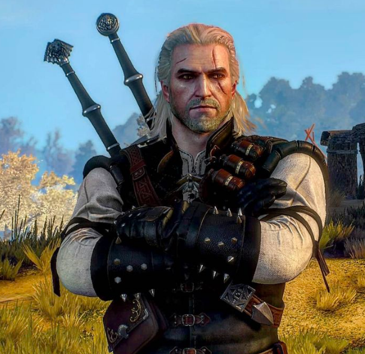
Геральт из Ривии
Белый Волк, мутант с боевыми навыками и магическими знаками. Ищет своё место в мире.
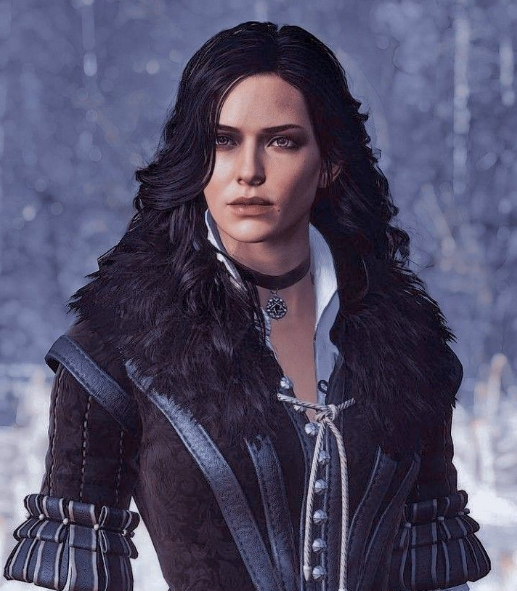
Йеннифэр из Венгерберга
Могущественная чародейка, любовь всей жизни Геральта.
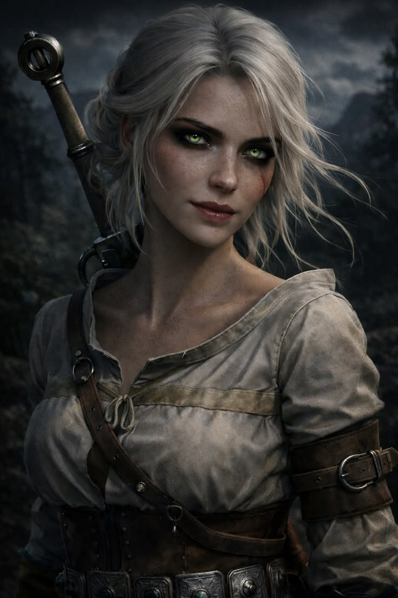
Цирилла
Львенок из Цинтры, обладающая древней кровью Старшей Крови.
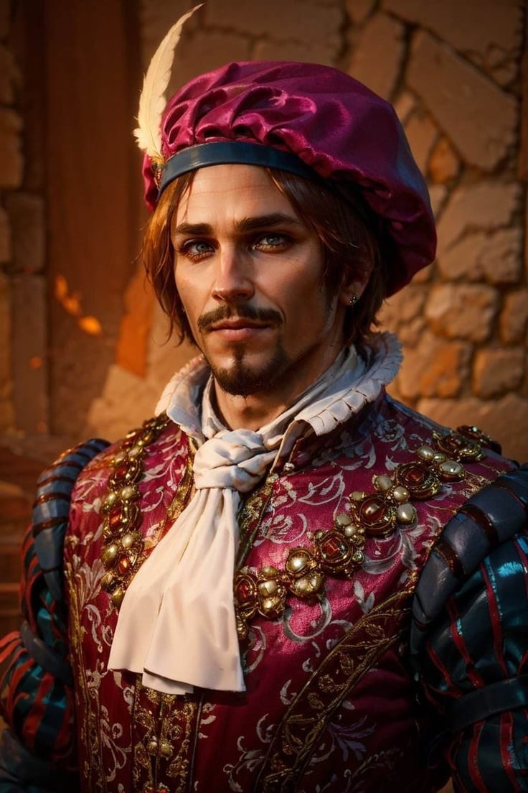
Лютик
Трубадур и лучший друг Геральта. Его баллады сделали ведьмака легендой.
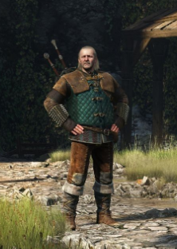
Весемир
Старейший ведьмак, наставник Геральта.
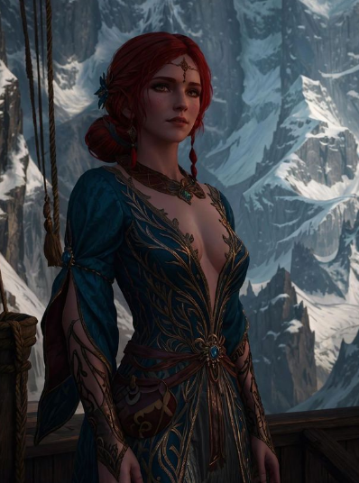
Трисс Меригольд
Талантливая чародейка, близкая подруга Геральта.
Школа Волка
Самая известная школа ведьмаков, к которой принадлежит Геральт из Ривии. Их цитадель — Каэр Морхен, расположенная в горах Королевств Севера. Школа Волка делает акцент на балансе между боевыми навыками и магическими знаками. Ведьмаки этой школы считаются наиболее сбалансированными и универсальными. Их отличительная черта — серебряные медальоны в виде волчьей головы.
Школа Кота
Ведьмаки этой школы известны как наёмные убийцы, а не охотники на монстров. Они специализируются на лёгкой броне, быстрых атаках и использовании катаны. Школа Кота неоднократно распадалась на фракции из-за внутренних конфликтов. Многие из них потеряли рассудок из-за дополнительных мутаций, что сделало их непредсказуемыми. Их медальон имеет форму кошачьей головы.
Школа Грифона
Школа Грифона славится своими магическими способностями и глубокими знаниями о мутациях. Их ведьмаки проходят дополнительные тренировки по усилению магических знаков. Цитадель школы располагалась в провинции Ковир. Ведьмаки этой школы предпочитают среднюю броню и сбалансированный бой. Их отличительный знак — медальон в форме грифа.
Школа Медведя
Ведьмаки Школы Медведя носят тяжёлую броню и полагаются на физическую силу. Они медлительны, но их удары сокрушительны. Их цитадель находилась на островах Скеллиге, что повлияло на их суровый характер. Школа Медведя практически исчезла после погрома, устроенного орденом Пылающей Розы. Их медальон выполнен в форме медвежьей головы.
Школа Змеи
Самая таинственная и малочисленная школа ведьмаков. Они специализируются на ядах, алхимии и скрытности. Их обучение проходило в цитадели Гора Смерти в Нильфгаарде. Школа Змеи готовила шпионов и убийц для императорского двора. Их ведьмаки редко носят медальоны открыто, предпочитая действовать из тени. Медальон имеет форму змеи, свернувшейся в кольцо.
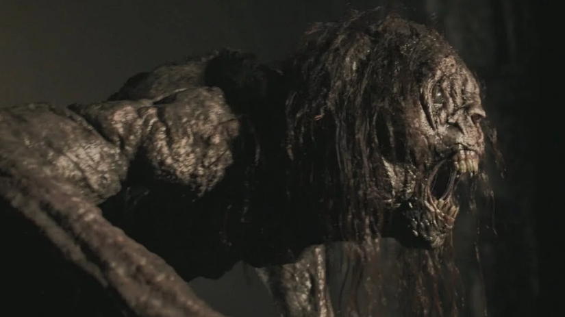
Стрыйга
Проклятая княжна Адда. Один из первых контрактов Геральта.
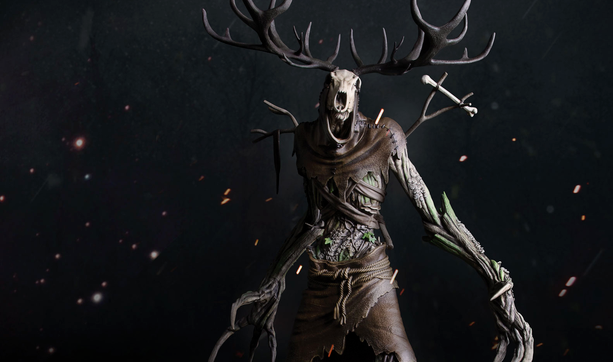
Леший
Хранитель леса. Огромное древоподобное чудовище.
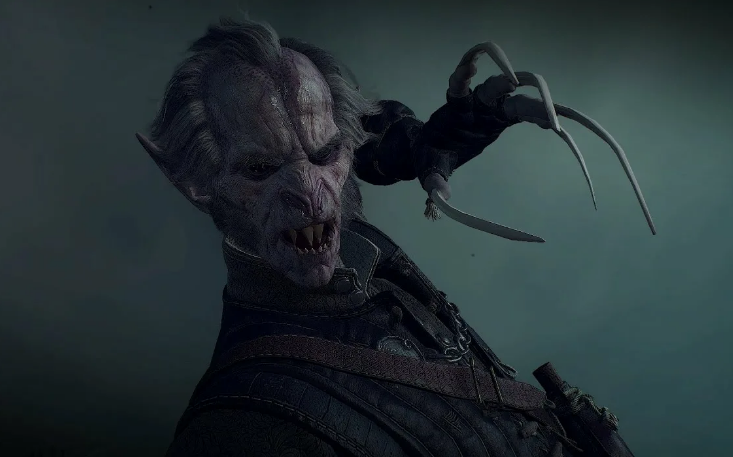
Вампир
Разумные и невероятно опасные. Регис — один из них.
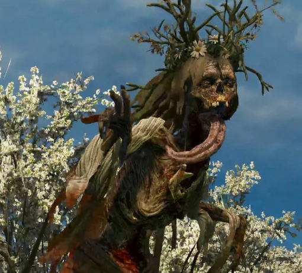
Полуденница
Призрак, убивающий путников в полдень.
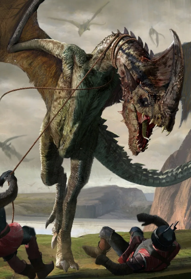
Дракон
Бородавчатый дракон — один из встреченных Геральтом.
Мутации, которые проходят ведьмаки, делают их бесплодными. Это цена за сверхспособности.
Игру впервые показали в романе Кровь эльфов, но популярность она получила благодаря Ведьмак 3.
2 сборника рассказов, 6 романов-саги и отдельный роман Сезон гроз.